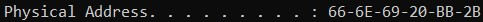
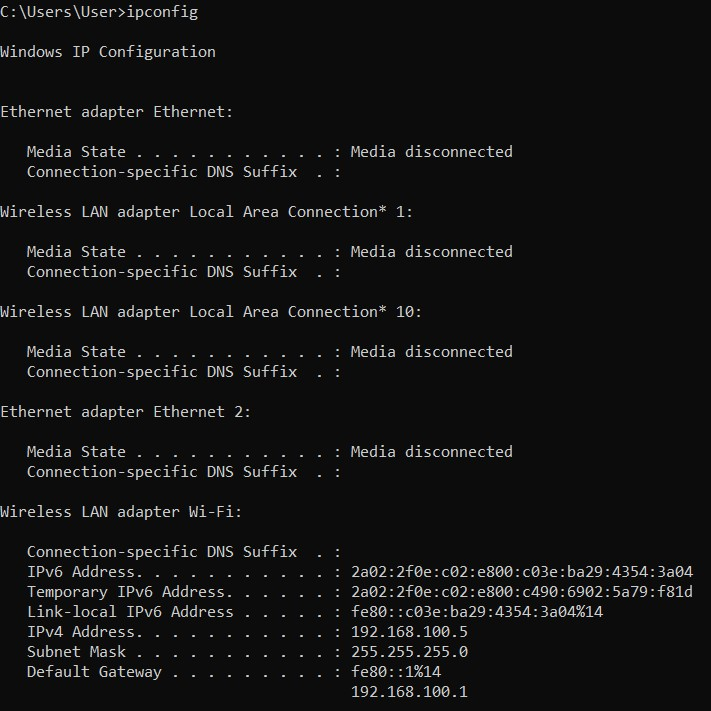
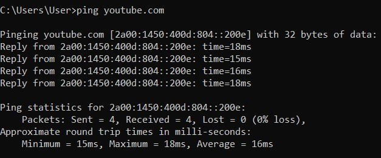

smuliac_evelin@yahoo.com

| Denumire | Specificatii | Producator |
|---|---|---|
| Placa de baza | X541UA | ASUSTeK Computer Inc. |
| CPU | Intel(R) Core(TM) i5-7200U CPU @ 2.50GHz 2.71GHz | |
| Memorie RAM | 4.00 GB (3.89 GB usable) | |
| Placa video | Intel(R) HD Graphics 620 | |
| Placa de retea | Realtek RTL8723BE Wireless LAN 802.11n PCI-E NIC |
Placa de retea comunica cu reteaua printr-o conexiune seriala (biții se transmit unul câte unul), iar cu calculatorul printr-o conexiune paralela (mai multi biti simultan).
Fiecare placa de retea are un numar de identificare hexadecimal unic pe 48 de biti atribuit de catre producatorii de hardware numit adresă MAC, de asemenea cunoscut ca o adresa fizica, care este independenta de protocolul de retea care este utilizat.
->Ipconfig: afiseaza toate valorile actuale de configurare a retelei TCP / IP
->Ping: instrument de retea folosit pentru a verifica daca un anumit calculator poate fi accesat prin intermediul unei retele de tip IP.
